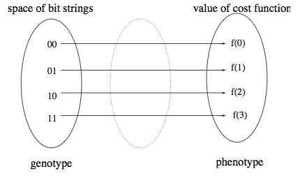
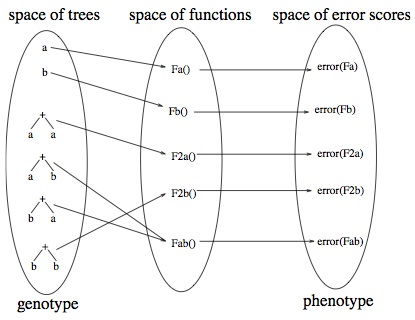

I came across a stack overflow question on finding the best parameters for solving a problem with Genetic Algorithms, there were a few answers however most of them were wrong. One of the answers argues that the No Free Lunch theorem states it is pointless. In the following I will attempt to briefly explain what that theorem is, and what it means for Evolutionary Algorithms (EAs), in particular Genetic Algorithms (GA) and Genetic Programming (GP).
The No Free Lunch Theorem (NFLT) was first introduced by Wolpert and Macready (1997), informally it states if prior assumptions about the optimisation problem cannot be made and incorporated into the optimisation algorithm, it cannot be expected to perform better than other algorithms . Or in other words in black box scenarios if algorithm $x$ performs better than algorithm $y$ in certain types of problem, it is equally likely the reverse is true for both deterministic and stochastic algorithms such as EAs [7].
In [2, 3, 4, 5, 6] they show in practice NFLT is only true approximately, because in reality optimization algorithms may have defined restrictions on the complexity of the considered functions. The most adequate example is perhaps a paper by Woodward (2003), he reasoned in some cases that NFLT does not apply at all.
Woodward (2003) reasoned the question is not whether the black box in question is using either GA or GP to solve optimization problems, but rather how the candidate solutions are represented and interpreted, because they will both ultimately be represented as a bit string stored in the computer memory, despite their distinct difference in how each of them represent their solutions. The key point established was NFTL assumes a direct one to one mapping between the space of the search space and "cost" space, which applies to GAs most of the time.
 
GPs on the other hand while it has a one to one direct mapping between the space of functions and space of "error" scores, the search space between trees to the functions they represent is many to one (e.g. $a + b$ is the same as $b + a$ both represent the same function), it is this many to one representation of trees to functions that invalidates NFLT.
Suppose we have GP algorithm $P$ and $Q$, let $T_p$ and $T_q$ be time-ordered sets of trees visted by algorithm $P$ and $Q$:
\begin{equation} T_p = \{ +ba, a, b, +aa, +bb, +ab \} \end{equation}
\begin{equation} T_q = \{ +ab, +ba, a, b, +aa, +bb \} \end{equation}
If $+ab$ is the function we need to solve the problem, then $P$ and $Q$ will find the solution at their first visit. However for any other function, $P$ will always outperform $Q$ thereby invalidating NFLT.
It is worth reiterating that while in general GA representation and interpretation is one to one, it can also be made to have a many to many representation just like GPs and vice versa.
The introduction of NFLT should not be seen as a limiting factor, on the contrary it should drive us to define the classes of problems being solved and algorithms being developed or used more carefully. [8] argues it is only then can meaningful discussion on blackbox algorithms begin.